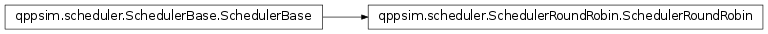

qppsim.scheduler.SchedulerRoundRobin module¶
Documentation¶
Module with a Round-Robin Scheduler. It follows the logic of the NistRR scheduler in ns-3
-
class
qppsim.scheduler.SchedulerRoundRobin.SchedulerRoundRobin(num_rbs)[source]¶ Bases:
qppsim.scheduler.SchedulerBase.SchedulerBaseClass with an implementation of a Round-Robin scheduler.
-
schedule()[source]¶ Method that holds the logic of the scheduler and provides the allocation for a TTI. The steps followed are:
- Get the current time from the DES
- Get the list of active bearers
- Add an event for the next scheduling event, at current_time + 1
- If needed, check the QoS of the bearers
- Process the retransmissions for the current TTI calling the parent’s
- ‘process_retransmissions’
- Locate the last UE and BID allocated. If they cannot be located,
- roll back to the first bearer in the UE, or first UE in the list.
- Allocate RBs one by one to the bearers that have data pending to
- transmit, in a Round-Robin fashion, until we run out of RBs or there are no more bearers with data to transmit.
- Allocate the remaining RBs according to the scheduler logic
- Process the allocation by calling the parent’s ‘process_allocations’
-